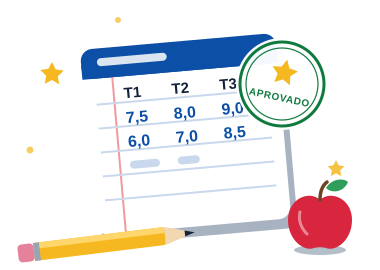

NotaRápida
A média trimestral dos seus alunos, em poucos segundos.
- Média e situação na hora. Lance T1, T2 e T3 e veja se o aluno está aprovado.
- Quanto falta. Com trimestres em branco, mostra a nota necessária para aprovar.
- Últimos 20 alunos consultados. Consulte as notas recentes, somente para leitura.
- Nada é salvo. Os dados ficam só nesta aba e somem ao sair.

Entrar
Informe o seu nome para personalizar a tela. Não é preciso senha.
O seu nome é usado apenas para personalizar a tela e não é salvo.
Site independente e não oficial. Não pertence ao Governo do Estado do Rio de Janeiro.
Hoje é o Dia do Professor! Obrigado por ensinar, inspirar e transformar vidas.
Lance as notas de T1, T2 e T3 e acompanhe os últimos 20 alunos consultados.
Nada é salvo. O nome do professor, os nomes dos alunos e as notas ficam apenas nesta aba e são apagados ao trocar de professor, recarregar ou fechar a página. Apenas os 20 últimos alunos consultados aparecem, e esses registros são somente para leitura.
Lançar notas
Defina a média de aprovação, informe o aluno e as notas dos trimestres.
Resultado
Média, situação e metas do aluno que você acabou de calcular.
Nenhum resultado calculado ainda.
Média final
- T1
- T2
- T3
Classificação:
Média para aprovação:
Últimos 20 alunos consultados
Do mais recente para o mais antigo. Os registros não podem ser editados: para corrigir uma nota, faça um novo cálculo.
- Consultados
- de 20
- Aprovados
- Reprovados
- Em andamento
- Média do grupo
A média do grupo considera só os alunos com as três notas lançadas. Alunos em andamento não entram na conta.
Nenhuma nota lançada ainda.
| Aluno | T1 | T2 | T3 | Média | Situação | Média para aprovação |
|---|